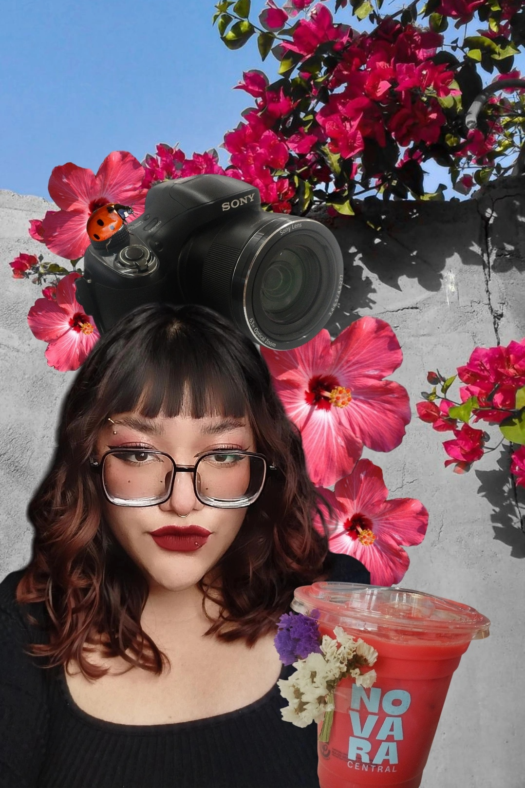

Hola! Soy Tamara Trejo Bautista
Nací en Puebla el 30 de diciembre de 2002 y, desde siempre, el diseño ha sido parte de mi vida. Crecí rodeada de creatividad gracias a mi mamá, quien también es diseñadora, y desde pequeña descubrí mi fascinación por el arte, los colores y la manera en que las ideas pueden cobrar vida a través de la imagen. Lo que comenzó como un interés natural se convirtió en mi vocación, llevándome a explorar diferentes áreas del diseño y a desarrollar una identidad visual propia.
Hoy, soy diseñadora gráfica con una gran pasión por la ilustración, especialmente enfocada en libros y empaques. Me encanta experimentar con colores, texturas y formas, buscando siempre contar historias a través de mis diseños. Creo que el arte tiene el poder de transmitir emociones y de conectar con las personas de una manera única. Además, el marketing y el diseño UX han captado mi interés porque combinan creatividad y estrategia, dos elementos esenciales para diseñar experiencias memorables y funcionales.
Soy una persona sumamente creativa, siempre en busca de nuevas formas de innovar y de plasmar ideas de manera visualmente atractiva. Me fascinan los colores vibrantes, los estilos llamativos y expresivos tanto en el diseño como en mi forma de vestir, porque creo que la creatividad no solo se limita al trabajo, sino que es un estilo de vida. Disfruto el trabajo en equipo, ya que colaborar con otras mentes creativas me permite enriquecer mis ideas y llevar cada proyecto a otro nivel. Además, me gusta trabajar de manera dinámica, explorando diferentes enfoques y adaptándome a cada desafío con entusiasmo y originalidad.
Si buscas a alguien con una visión fresca, energía y pasión por el diseño, estaré encantada de sumarme a tu proyecto y crear algo increíble juntas o juntos.
Si quieres conocer más sobre mi trabajo y explorar mis proyectos, te invito a visitar mi portafolio y redes sociales. Ahí podrás ver una muestra de mis diseños, ilustraciones y creaciones en las que combino creatividad, estrategia y color para dar vida a ideas únicas. Descubre mi estilo, mi proceso y cómo cada pieza refleja mi pasión por el diseño. Da clic en los enlaces y sumérgete en mi mundo visual.